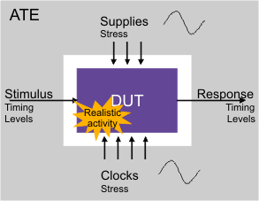

Protocol Aware ATE
A SOC device is part of a complete system. As such it is
- connected to other devices
- communicating through protocols via standard host interfaces, such as JTAG, MDIO, I2C,...
These kind of system-like tests challenges the Automated Test Equipment (ATE) in terms of
- responses of the DUT being non-deterministic in many cases
- typical host interfaces are operating from ksps to Gbps
- devices being affected by environmental conditions, like temperature, voltage variation, jitter...

Therefore a modern ATE must
- support protocol based transactions
- emulate and track device behavior
to perform 'system-like' testing.
Some basic level of protocol based tests have been identified and implemented on today's ATE already.
Alternatives such as BOST (Built Off-Chip Self Test) -test circuits or ‘golden devices' on the load board- provide insight to system-like testing but have weaknesses for Time-To-Market (TTM) and Cost-Of-Test (COT).
The following topics provide details to transaction based protocol tests of deterministic device behavior with the V93000 software which requires a special license (refer to License requirements for transaction based protocol tests) for using this feature.
Functional changes
- Introduced in SmarTest 7.1.0